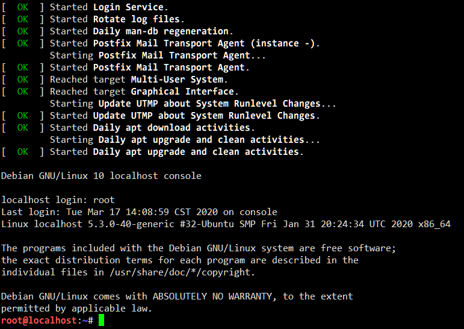

准备你的容器环境¶
构建容器的根文件系统（rootfs）¶
容器的根文件系统和完整操作系统的根文件系统并无太大区别，都包含了一个完整的操作系统目录结构和必要的文件。下面介绍三种构建容器根文件系统的方式。
本次实验推荐使用 LXC 镜像。
自己编写 init 程序与使用 BusyBox 构建根文件系统¶
实验一中介绍的两种构建初始内存盘（initrd）的方式在这里可以直接使用。唯一的区别是，在将文件放置妥当后，你不再需要将它们打包为 initrd.cpio.gz 文件，而是可以在容器中直接使用。如果你准备采用这两种方式，可以直接阅读实验一文档的相关章节。
从 LXC 镜像库下载容器镜像¶
Linux Containers（LXC）是一个系统容器实现，其使用 Linux 的容器技术运行完整的 Linux 子系统。由于容器直接使用主机的内核，没有了虚拟化中间层，与传统虚拟机（KVM, VMware）相比更轻便。
LXC 提供了多种操作系统镜像，你可以从 https://images.linuxcontainers.org/images/ 直接选择下载（请下载 amd64 架构下 default 中的 rootfs.tar.gz 或 rootfs.tar.xz 文件）。不同的 Linux 发行版镜像不影响本实验的后续内容，但如果你不了解它们的区别的话，我们推荐 Ubuntu 18.04、Ubuntu 20.04 或 Debian Buster 的镜像。
下载到的打包 rootfs 文件只需要解压到一个新的目录即可：
mkdir rootfs/
cd rootfs/
tar zxf ../rootfs.tar.gz # 或 tar Jxf ../rootfs.tar.xz
Vlab 平台的虚拟机即是 LXC 系统容器，但本实验不对 LXC 的实现作过多探究。
使用 chroot 与 systemd-nspawn 体验隔离环境与容器技术¶
chroot 是一个用于限制进程可以看见的 root 目录（根目录）的机制。在 chroot 之后产生的所有子进程，在正常情况下是无法看见 chroot 目录以外的内容的。尽管实际的容器并不使用 chroot（后面会讲到），理解它仍然是理解容器原理的重要的一步。
在你准备好的 BusyBox 或 LXC 系统镜像目录中运行 chroot . /bin/sh 或 chroot . /bin/bash，即可 chroot 进入这个系统镜像并对文件系统进行一些操作。如果你使用 LXC 镜像，你甚至可以在这里进行 apt update 等包管理操作。
这只是一个非常简单基础的隔离。root 用户可以轻易脱离不加额外限制的 chroot 监狱，并且 chroot 不阻止其他访问系统资源或其他进程的方式（你可以试试在 chroot 环境下执行 reboot——注意保存未完成的工作）。
systemd-nspawn¶
作为一个对比，systemd-nspawn 是一个最小化但完整的容器实现。你可以使用软件包管理器安装 systemd-container 来获得 systemd-nspawn 命令。
systemd-nspawn 的用法与 chroot 类似，首先 cd 到存有容器系统镜像的目录，然后运行 systemd-nspawn，你就可以得到一个 shell。尽管这个 shell 看起来与 chroot 中的 shell 没有什么区别，但是尝试使用某些命令就会发行明显的不同。下面列出几个例子，你可以自己分别在 systemd-nspawn 中和 chroot 中运行并比较：
reboot
mount # 查看挂载点
dd if=/dev/sda of=test bs=64k count=1 # 尝试访问设备文件
echo $$ # 检查 shell 本身的 PID
错误处理
如果你使用 systemd-nspawn 时遇到了下面这个报错:
Failed to read machine ID from container image: Invalid argument
请向容器镜像中的 /etc/machine-id 文件写入一个 machine ID 字符串（使用以下命令），然后重新尝试运行.
$ systemd-machine-id-setup --root=容器的rootfs路径
对于 Ubuntu 20.04（或其他任何运行 systemd 240 或以上版本的系统），也可以使用新的命令
$ systemd-id128 new > etc/machine-id
使用 systemd-nspawn 启动一个容器¶
与 chroot 不同，systemd-nspawn 作为一个完整的容器实现，是可以启动容器中的操作系统的。方便起见，这一步推荐使用 LXC 镜像。
为了确保你能够登录进容器系统中的用户，首先需要为 root 用户设置密码（或者清除密码）。使用 chroot 或 systemd-nspawn 进入容器的根文件系统，运行 passwd root 设置密码或 passwd -d root 清除密码，然后退出这个 shell。
再次使用 systemd-nspawn 将这个文件系统作为容器运行，不过这一次加上 --boot 参数。该参数会让 systemd-nspawn 尝试运行文件系统中的 init 程序（而不是一个 shell），从而“启动”这个文件系统中的操作系统。看到提示后，你就可以输入用户名 root 和密码登录进系统了，你甚至可以 poweroff 或 reboot 这个容器中的系统而不用担心会导致主机被关机或重启。

准备你的容器¶
在你准备好 rootfs 之后，可以将本页底部助教编写的一个示例程序保存为 main.c 并编译运行它：
gcc -o lab4 main.c
./lab4 rootfs/ /bin/bash
这时候你就能看到一个“容器”中的 shell 了。当然了，这里的“容器”加上了双引号是因为它仅仅是一个 chroot 程序，因此接下来的任务就是对这个程序进行修改升级（你也可以选择自己从头编写一个）。
参考资料¶
示例程序¶
#include <stdio.h>
#include <unistd.h>
#include <sys/types.h> // For wait(2)
#include <sys/wait.h> // For wait(2)
const char *usage =
"Usage: %s <directory> <command> [args...]\n"
"\n"
" Run <directory> as a container and execute <command>.\n";
void error_exit(int code, const char *message) {
perror(message);
_exit(code);
}
int main(int argc, char **argv) {
if (argc < 3) {
fprintf(stderr, usage, argv[0]);
return 1;
}
if (chdir(argv[1]) == -1)
error_exit(1, argv[1]);
pid_t pid = fork();
if (pid == 0) {
// Child goes for target program
if (chroot(".") == -1)
error_exit(1, "chroot");
execvp(argv[2], argv + 2);
error_exit(255, "exec");
}
// Parent waits for child
int status, ecode = 0;
wait(&status);
if (WIFEXITED(status)) {
printf("Exited with status %d\n", WEXITSTATUS(status));
ecode = WEXITSTATUS(status);
} else if (WIFSIGNALED(status)) {
printf("Killed by signal %d\n", WTERMSIG(status));
ecode = -WTERMSIG(status);
}
return ecode;
}